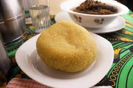

Eba and Egusi soup
Eba is a swallow made with boiling water and garri (cassava flakes) and stirred until it forms a dough. It is a common dish in Nigeria. It is not a stand-alone food; it belongs to the category of food called swallows.
Sometimes, the most simple things are the most complex. If you are a Nigerian and someone asks you “what is eba” you would be like; what? are you kidding me?”.
Well, while you know the answer to that question, so many other persons from outside Nigeria are still trying to grasp the nitty-gritty of Nigerian cooking.
I get questions like this every day and it doesn’t surprise me.
What is an eba?
What is it made of?
What is garri made of?
Well, I am going to give you a detailed break down via this article and even show you how to
make eba from store-bought garri. If you are new to Nigerian cooking, I can understand exactly where you are now.
Eba is a Nigerian staple food eaten all over the country and beyond. It is made from fried grated cassava (manioc) flour, commonly called as garri.
Here are the ingredients you will need for the full preparation of Eba and Egusi soup.
- Cassava flour also known as (Garri)
- water
- Palm-Oil
- Melon, commonly called (Egusi)
- 1 cup blended onions (about 3- 5 and fresh chilies, to taste)
- 4 cups egusi (melon seeds, ground or milled)
- 1⁄2 – 1 cup palm oil
- 2 teaspoons fresh Une (Iru, locust beans)
- Salt (to taste)
- Ground crayfish (to taste)
- 7– 8 cups stock
- Cooked Meat & fish (quantity and variety to personal preference)
- cups cut pumpkin leaves
- 1 cup waterleaf (cut)
- 3 tablespoons bitter leaf (washed)
Soup Preparations
- In a large pot, heat the palm oil on medium for a minute and then add the Une.
- Slowly add the stock and set on low heat to simmer.
- Scoop teaspoon size balls of the egusi paste mixture into the stock. Be sure to keep ball shape.
- Leave to simmer for 20-30 minutes so the balls cook through.
- Add the meat and fish and other bits which you’d like to use.
- Add cut-up pumpkin leaves.
- Add the waterleaf.
- Stir and put a lid on the pot and allow cook for 7–10 minutes, till the leaves wilt.
- Add the bitter leaf. Leave the lid off while the cooking finishes for another 5-10 minutes.
- Stir, check seasoning and adjust accordingly.
Your result should look something like this
